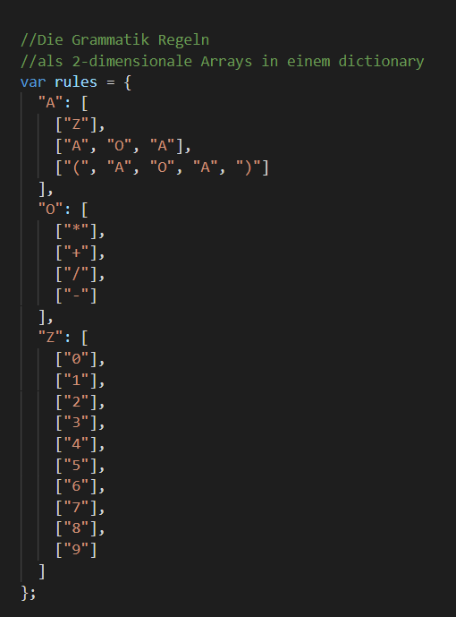
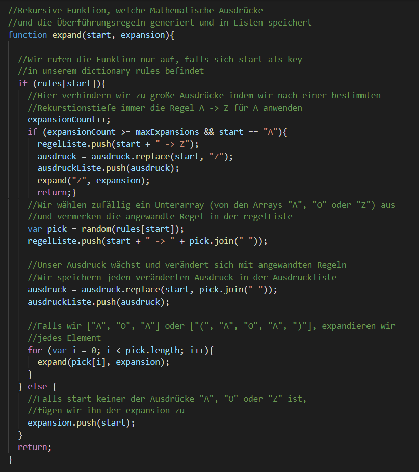
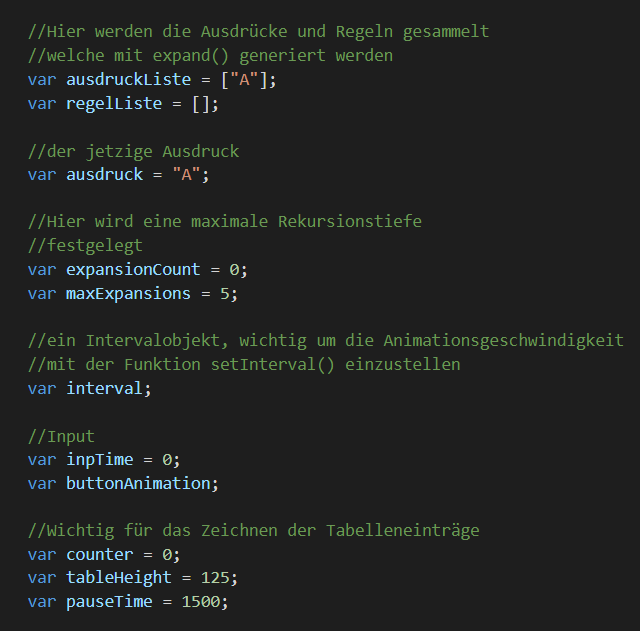
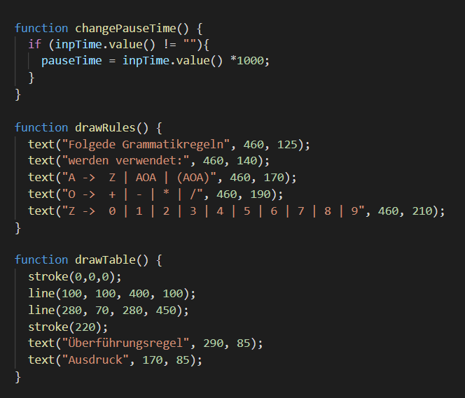
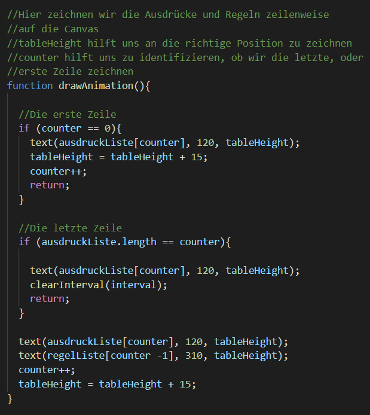
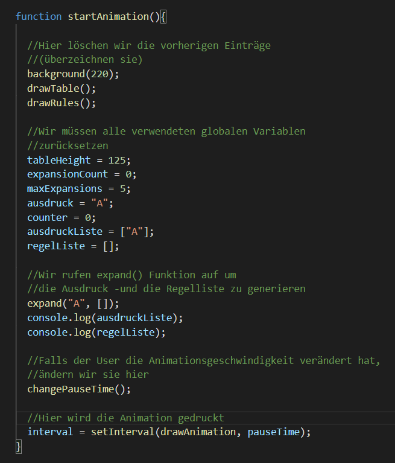
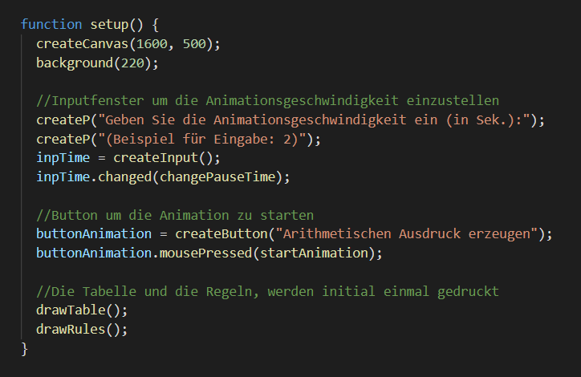

Technisch:
Ich habe das p5.js Framework für die Darstellung des Generators für arithmetische Ausdrücke, also der Tabelle und den Regeln, verwendet.
Fachlich:
Ich habe mich erstmal darauf konzentriert die richtigen grammatischen Regeln zu finden um die gewünschten arithmetischen Ausdrücke zu zeichnen.
Ich habe mich dazu entschieden die Regeln als Arrays in einem dictionary zu speichern:

Dann brauchte ich eine Funktion mit der ich arithmetische Ausdrücke generieren kann.
Ich habe mich hier für eine rekursive Funktion entschieden, die mir die veränderten Ausdrücke und Regeln in jeweils einem Array speichert.
So kann ich später auf diese Arrays zugreifen und mit setInterval() die Animationsgeschwindigkeit bestimmen.

Damit ich nicht sehr viele Parameter an jede Funktion übergeben muss, habe ich mich für globale Variablen entschieden.

Hier sind noch ein paar Hilfsfunktion, die ich benötige um die Animationsgeschwindigkeit einzustellen, die Tabelle und die Regeln zu zeichnen.

Als nächsten Schritt musste ich die jeweils nächste Zeile zeichnen können. Ich mache das mit drawAnimation()

Um die Animation zu starten, benutze ich startAnimation(), welche drawAnimation() mit setInterval() aufruft,
also abhängig von einer eingestellten Animationsgeschwindigkeit ist.
Ausserdem löscht diese Funktion den vorherigen Ausdruck aus der Tabelle, bevor sie einen neuen beginnt

Hier noch die setup() Funktion mit den Buttons, welche die genannten Funktionen auslösen
